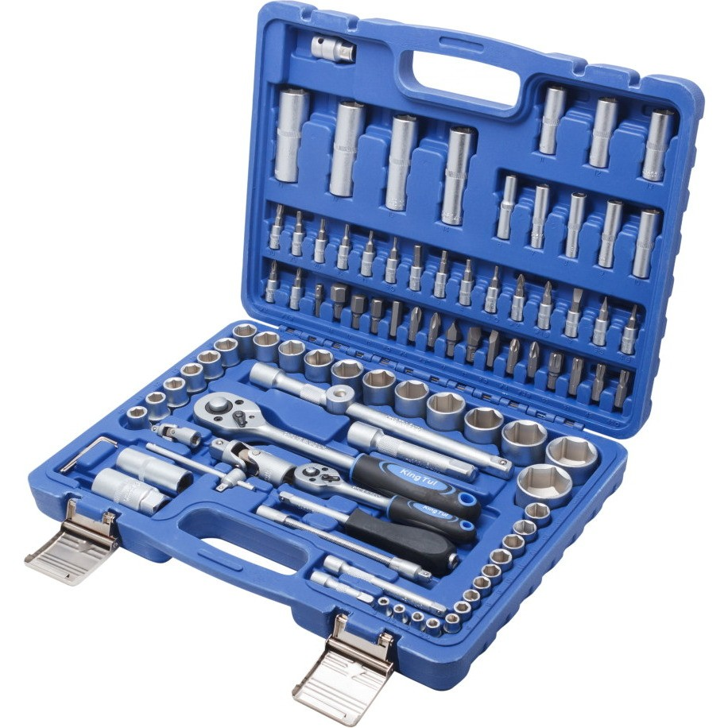

Набор инструментов Калибр НСМ-108
Описание товара
Набор инструментов Калибр НСМ-108 предназначен для выполнения монтажно-слесарных работ. С его применением можно проводить обслуживание резьбовых соединений. Представленный комплект рекомендован для приобретения профессионалами.
Характеристики товара
- Общее количество предметов —108 шт
- Биты в комплекте — есть
- Ключи гаечные в комплекте — нет
- Кейс в комплекте — есть
Технические характеристики
| № п/п | Тип | Характеристика | Значание мин | Значение макс |
|---|---|---|---|---|
| 1 | Биты | крестовые Phillips (PH) | PH4, PH3 | |
| Pozi (PZ) | PZ4, PZ3 | |||
| 2 | Головки торцевые | 4 мм | 14 мм | |
Подробное описание товара
В набор Калибр НСМ-108 входят: торцевые головки, головки свечные, удлинители, биты, адаптеры для бит, кардан шарнирный, трещотка, головки со вставкой, вороток Т-образный, отверточная рукоятка, угловые/шестигранные ключи и т. д. Общее число предметов – 108 штук. Производитель постарался подобрать максимальное количество инструментов, которые могут пригодиться специалистам. Набор поставляется в кейсе из полимерного материала. Пространство внутри ящика оптимизировано, для каждого предмета выделено свое место. Четкая организация расположения инструментов облегчает их дальнейший поиск при работе. Все предметы изготовлены из прочной хромованадиевой стали. Данный металлический сплав – гарантия долговечности инструментов. Производитель подумал о защите оснащения от появления ржавчины. Для этого на поверхность металла наносится особенное антикоррозийное покрытие.
Комплектация
- адаптер для бит, трещотка, кардан шарнирный
- карданный шарнир, вороток Т-образный, отверточная рукоятка, трещотка
- Биты HEX 14 мм, 12 мм, 10 мм, 8 мм, 7 мм
- Биты TORX T60, T55, T50, T45, T40